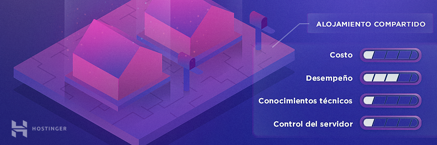
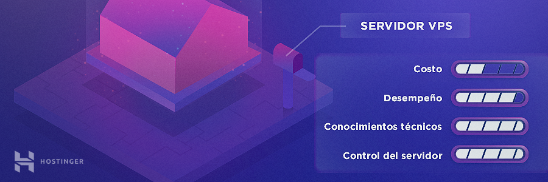
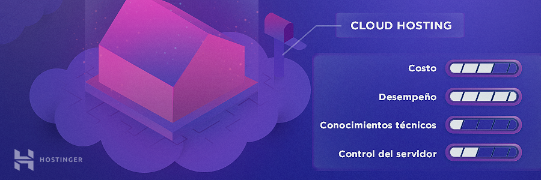
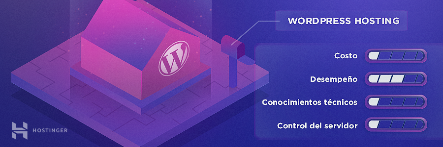
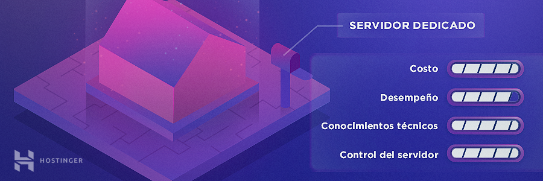

TIPOS DE HOSTING
La mayoría de los proveedores de alojamiento ofrecen diferentes tipos de hosting web para poder satisfacer las necesidades de diferentes clientes, ya sea que desees crear un blog personal simple o ser dueño de un gran negocio en línea y necesites un sitio web intrincado para tu empresa. Estas son las opciones disponibles más populares:
- Hosting Compartido
- Hosting VPS (Servidor virtual privado)
- Alojamiento en la nube (Cloud Hosting)
- Hosting WordPress
- Hosting con servidor dedicado
Lo mejor es comenzar de a poco y cuando tu sitio alcance números de tráfico más altos, cambiarte a un tipo de plan más avanzado. En cualquier caso, vamos a describir cada uno con más detalle.
Hosting Compartido

Los proveedores de hosting web suelen ofrecer más de un plan para cada tipo de alojamiento. Por ejemplo, aquí en Hostinger, nuestros servicios de hosting web compartido vienen con tres planes de alojamiento diferentes.
Este tipo de alojamiento web es una de las opciones más elegidas para responder a las necesidades de hosting web y una excelente solución para la mayoría de las pequeñas empresas y blogs personales. Con este tipo de alojamiento web, compartes un servidor con otros clientes. Los sitios web alojados en el mismo servidor comparten todos los recursos, como la memoria, el poder de cómputo, el espacio en disco y otros.
Pros:
- Bajo costo, perfecto para páginas web de negocios pequeños
- No se necesitan conocimientos técnicos específicos
- Servidor pre-configurado
- anel de control fácil de usar (hPanel)
- El mantenimiento y la administración del servidor son realizados por el proveedor
Contras:
- Poco o ningún control sobre la configuración del servidor
- Los aumentos del tráfico en otros sitios web pueden ralentizar tu sitio
Hosting VPS
Cuando usas un servidor virtual privado, o VPS para abreviar, todavía estás compartiendo un servidor con otros usuarios. Sin embargo, tu servidor web te asigna una partición completamente separada en ese servidor. Esto significa que obtienes un espacio de servidor dedicado y una cantidad reservada de recursos y memoria.
De hecho, el alojamiento VPS puede ser excelente para empresas medianas con un número de páginas web y tráfico en rápido crecimiento.
Pros:
- Espacio de servidor dedicado
- Los aumentos de tráfico en otros sitios web no afectan para nada tu rendimiento
- Acceso raíz al servidor
- Fácilmente escalable y altamente personalizable
Contras:
- Más caro que otros tipos de alojamiento web
- Debes tener conocimientos técnicos y de administración de servidores web
Hosting en la nube (Cloud Hosting)
El cloud hosting es actualmente la solución más confiable del mercado. Con el alojamiento en la nube, tu proveedor te brinda un grupo de servidores y tus archivos y recursos se replican en cada servidor.
Cuando uno de los servidores en la nube está ocupado o encuentra un problema, tu tráfico se enruta automáticamente a otro servidor en el clúster. Esto resulta en poco o ningún tiempo de inactividad, lo cual es excelente si posees un sitio web muy ocupado.
Pros:
- Poco o ningún tiempo de inactividad
- Las fallas del servidor no afectan a tu sitio
- Asigna recursos según demanda
- Pago sobre la marcha (solo pagas por lo que usas)
- Más escalable que otros tipos de hosting
Contras:
- Es difícil estimar los costos
- No siempre se brinda acceso raíz
Hosting WordPress
El hosting WordPress es una forma particular de hosting compartido, creado para propietarios de sitios de WordPress. Su servidor está configurado específicamente para WordPress y tu sitio viene con plugins preinstalados para tareas cruciales, como el almacenamiento en caché y la seguridad.
Debido a la configuración altamente optimizada, tu página web se carga mucho más rápido y se ejecuta con menos problemas. Los planes de alojamiento de WordPress con frecuencia incluyen características adicionales relacionadas con WordPress, como temas prediseñados de WordPress, creadores de páginas de arrastrar y soltar y herramientas de desarrollo específicas.
Pros:
- Bajo costo y apto para principiantes
- Instalación de WordPress con un solo clic
- Buen desempeño para los sitios de WordPress
- Equipo de atención al cliente capacitado en problemas de WordPress
- Plantillas y plugins de WordPress preinstalados
Contras:
- Recomendado solo para sitios de WordPress, lo que puede ser un problema si quieres alojar más de un sitio web en tu servidor
Servidor dedicado
Un host web con servidor dedicado significa que tienes tu propio servidor físico dedicado exclusivamente para tu sitio. Por lo tanto, el alojamiento dedicado te brinda una flexibilidad increíble para manejar tu página web. Puedes configurar tu servidor como quieras, elegir el sistema operativo y el software que quieres utilizar, y configurar todo el entorno de hosting según tus propias necesidades.
De hecho, alquilar un servidor dedicado es tan poderoso como tener tu propio servidor in-situ, pero además viene con el soporte profesional de tu proveedor. Por lo general, esto está más orientado a las grandes empresas en línea que se ocupan de un tráfico pesado.
Pros:
- Control total sobre la configuración del servidor
- Alta confiabilidad y opciones de seguridad
- Acceso root a tu servidor
Contras:
- Alto costo, más orientado a empresas más grandes
- Se requieren conocimientos técnicos y de administración de servidores